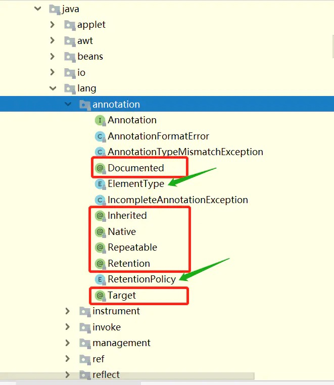
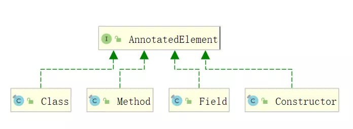
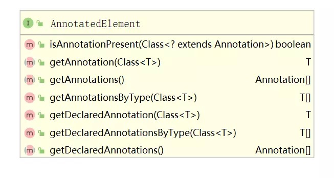
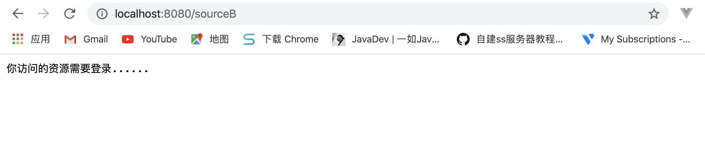
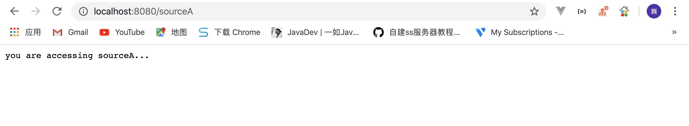
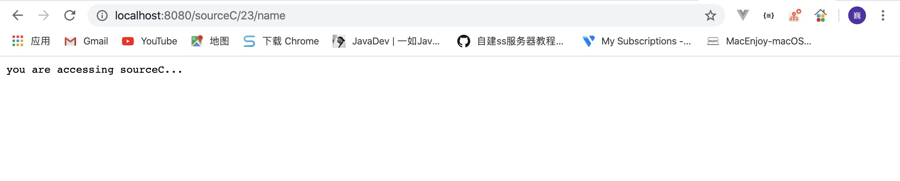
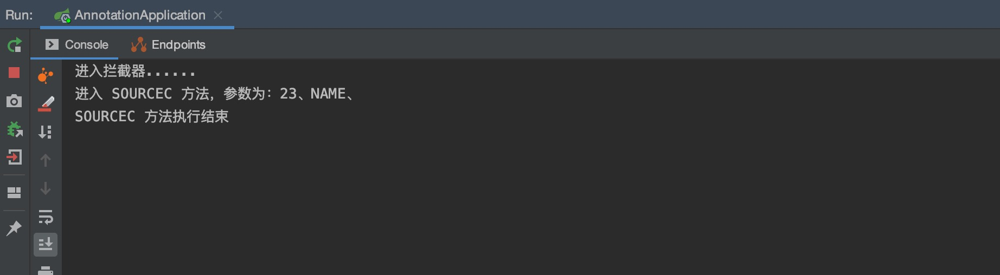

什么是注解（Annotation）
Java注解是什么，以下是引用自维基百科的内容：
Java 注解又称 Java 标注，是 JDK5.0 版本开始支持加入源代码的特殊语法元数据。Java 语言中的类、方法、变量、参数和包等都可以被标注。和 Javadoc 不同，Java标注可以通过反射获取标注内容。在编译器生成类文件时，标注可以被嵌入到字节码中。Java 虚拟机可以保留标注内容，在运行时可以获取到标注内容。 当然它也支持自定义 Java 标注。
注解体系图
元注解：java.lang.annotation 中提供了元注解，可以使用这些注解来定义自己的注解。主要使用的是 Target 和 Retention 注解。

注解处理类：既然上面定义了注解，那得有办法拿到我们定义的注解啊。java.lang.reflect.AnnotationElement 接口则提供了该功能。注解的处理是通过 java 反射来处理的。如下，反射相关的类 Class，Method，Field 都实现了 AnnotationElement 接口。


因此，只要我们通过反射拿到 Class，Method，Field 类，就能够通过 getAnnotation(Class<T>) 拿到我们想要的注解并取值。
注解基本语法
注解类型的声明部分
注解在 Java中，与类、接口、枚举类似，因此其声明语法基本一致，只是所使用的关键字有所不同 @interface。在底层实现上，所有定义的注解都会自动继承 java.lang.annotation.Annotation 接口。
1 | public CherryAnnotation { |
注解类型的实现部分
根据我们在自定义类的经验，在类的实现部分无非就是书写构造、属性或方法。但是，在自定义注解中，其实现部分只能定义一个东西：注解类型元素（annotation type element）。咱们来看看其语法：
1 | public CherryAnnotation { |
定义注解类型元素时需要注意如下几点：
- 访问修饰符必须为
public，不写默认为 public。 - 该元素的类型只能是基本数据类型、String、Class、枚举类型、注解类型（体现了注解的嵌套效果）以及上述类型的一位数组。
- 该元素的名称一般定义为名词，如果注解中只有一个元素，请把名字起为
value（后面使用会带来便利操作）。 ()不是定义方法参数的地方，也不能在括号中定义任何参数，仅仅只是一个特殊的语法。default代表默认值，值必须和第2点定义的类型一致。- 如果没有默认值，代表后续使用注解时必须给该类型元素赋值。
可以看出，注解类型元素的语法非常奇怪，即又有属性的特征（可以赋值），又有方法的特征（打上了一对括号）。但是这么设计是有道理的，我们在后面的章节中可以看到：注解在定义好了以后，使用的时候操作元素类型像在操作属性，解析的时候操作元素类型像在操作方法。
常用元注解
元注解：专门修饰注解的注解。 它们都是为了更好的设计自定义注解的细节而专门设计的。我们为大家一个个来做介绍。
@Target
Target：描述了注解修饰的对象范围，取值在 java.lang.annotation.ElementType 定义，常用的包括：
TYPE：用于描述类、接口或 enum 类型FIELD：用于描述属性METHOD：用于描述方法PARAMETER：用于描述方法变量CONSTRUCTOR：用于描述构造方法LOCAL_VARIABLE：用于描述局部变量ANNOTATION_TYPE：用于描述注解类型PACKAGE：用于描述包
示例：
1 | //@CherryAnnotation被限定只能使用在类、接口或方法上面 |
@Retention
Retention: 表示注解保留时间长短。取值在 java.lang.annotation.RetentionPolicy 中，取值为：
SOURCE：在源文件中有效，编译过程中会被忽略CLASS：随源文件一起编译在 class 文件中，运行时忽略RUNTIME：在运行时有效
只有定义为 RetentionPolicy.RUNTIME 时，我们才能通过注解反射获取到注解。
示例：
1 | (ElementType.FIELD) // 注解用于字段上 |
@Documented
@Documented 注解，是被用来指定自定义注解是否能随着被定义的 java 文件生成到 JavaDoc 文档当中。
@Inherited
@Inherited 注解，是指定某个自定义注解如果写在了父类的声明部分，那么子类的声明部分也能自动拥有该注解。@Inherited 注解只对那些 @Target 被定义为 ElementType.TYPE 的自定义注解起作用。
自定义注解的配置使用
在具体的 Java 类上使用注解
定义一个注解、和一个供注解修饰的简单 Java 类。
示例：
1 | (RetentionPolicy.RUNTIME) |
所以最终书写形式如下：
1 | public class Student { |
特殊语法
情况一
如果注解本身没有注解类型元素，那么在使用注解的时候可以省略 ()，直接写为：@注解名（等效于@注解名()）。。
示例：
1 | (RetentionPolicy.RUNTIME) |
1 | //等效于@FirstAnnotation() |
情况二
如果注解本本身只有一个注解类型元素，而且命名为 value，那么在使用注解的时候可以直接使用：@注解名(注解值)（等效于：@注解名(value = 注解值)）。
示例：
1 | (RetentionPolicy.RUNTIME) |
1 | //等效于@ SecondAnnotation(value = "this is second annotation") |
情况三
如果注解中的某个注解类型元素是一个数组类型，在使用时又出现只需要填入一个值的情况，那么在使用注解时可以直接写为：@注解名(类型名 = 类型值)（等效于：@注解名(类型名 = {类型值})）。
示例：
1 | (RetentionPolicy.RUNTIME) |
1 | //等效于@ ThirdAnnotation(name = {"this is third annotation"}) |
自定义注解场景应用
反射获取注解
我们先来写个简单示例，先自定义一个注解：
1 | (RetentionPolicy.RUNTIME) // 保留到运行时，可通过注解获取 |
通过反射获取注解：
1 | public class MyFieldTest { |
自定义注解 + 拦截器 实现登录校验
接下来，我们使用 springboot 拦截器实现这样一个功能，如果方法上加了 @LoginRequired，则提示用户该接口需要登录才能访问，否则不需要登录。
首先定义一个 @LoginRequired 注解：
1 | (ElementType.METHOD) |
然后写两个简单的接口，访问 sourceA，sourceB资源，在第一个方法上加上自定义注解：
1 |
|
实现 spring 的 HandlerInterceptor 类，并把 自定义注解 @LoginRequired 拦截下来，如下：
1 | public class SourceAccessInterceptor implements HandlerInterceptor { |
实现 spring 类 WebMvcConfigurer，创建配置类把拦截器添加到拦截器链中：
1 |
|
运行成功，访问 sourceB 时需要登录了，访问 sourceA 则不用登录：


自定义注解 + AOP 实现日志打印
先导入切面需要的依赖包：
1 | <dependency> |
定义一个注解 @MyLog：
1 | (RetentionPolicy.RUNTIME) |
定义一个切面类，见如下代码注释理解：
1 |
|
在 IndexController 写一个 sourceC 进行测试，加上我们的自定义注解：
1 |
|
启动项目，输入访问地址：http://localhost:8080/sourceC/23/name，结果如下图：


案例源码：https://github.com/V-Vincen/annotation
参考：https://www.jianshu.com/p/a7bedc771204
If you like this blog or find it useful for you, you are welcome to comment on it. You are also welcome to share this blog, so that more people can participate in it. If the images used in the blog infringe your copyright, please contact the author to delete them. Thank you !